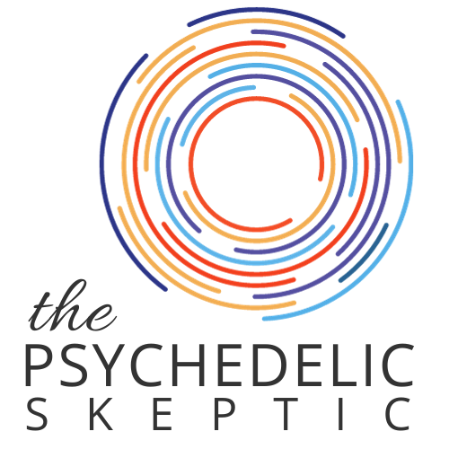

A podcast that takes the science seriously, challenges the hype, and offers clear-eyed perspective to anyone curious about this work.

About the podcast
Psychedelic therapy is generating extraordinary interest — and extraordinary claims. As someone who works in this field every day, I believe the research is genuinely compelling and the therapeutic potential is real. I also believe that overstated claims, inadequate safety standards, and magical thinking do real harm to real people.
The Psychedelic Skeptic is where I explore these tensions honestly. I bring clinical expertise, research fluency, and genuine intellectual curiosity to conversations about what psychedelics can and cannot do — what the evidence actually supports, and what is hype, wishful thinking, or worse.
If you are considering psychedelic therapy, this podcast will give you the honest, rigorous foundation you need to make that decision well.
Listen on Apple Podcasts Listen on Spotify